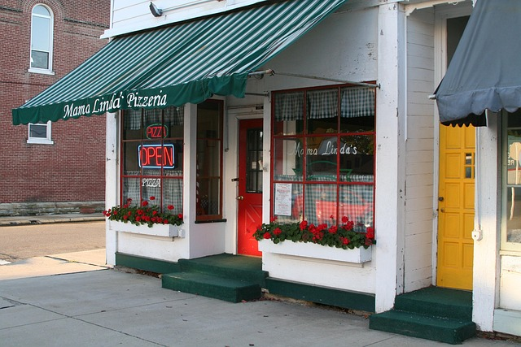

Our Mission
Mission Statement
At the City of Waverly, our mission is to attract and support businesses that strengthen Waverly's economy and quality of life through sustainable growth, community-focused development and strong public-private partnerships.
Economic Development Focus Areas

Business Support
We provide resources, mentorship, and funding access to help local businesses thrive and expand.

Investment Opportunities
Waverly welcomes investors with strategic development zones, tax incentives, and real estate assets.

Workforce Development
We partner with schools and industries to train a future-ready workforce aligned with employer needs.